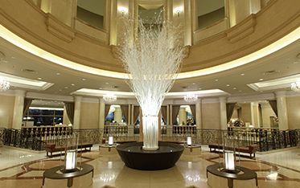
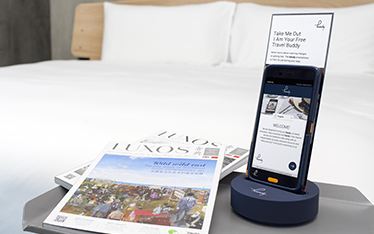
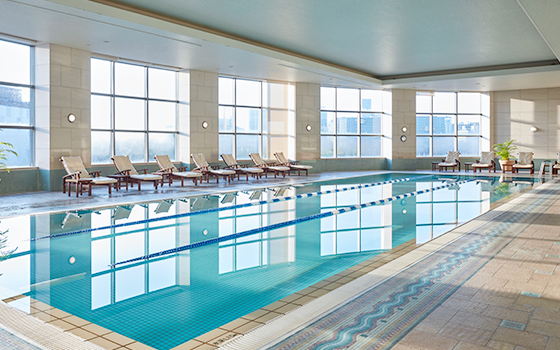

도쿄 도심에서 가장 가까운 리조트호텔

도쿄 도심에서 가장
가까운 리조트호텔
도쿄 다이바 니코 호텔은 도쿄만의 오다이바 지역에 위치해 있으며, 도쿄 도심에서 가장 가까운 도시 리조트호텔입니다. 도심 및 하네다 공항과 가까워 교통이 편리하며, 지리적 위치도 좋기 때문에 마음껏 도쿄의 관광과 쇼핑을 즐기실 수 있습니다. 호텔 고층에서 멀리 바라보면 도쿄만의 전경, 무지개 다리, 도쿄타워 등의 감동시키는 야경이 한눈에 들어올 수 있습니다. '마음껏 도코를 유람하고 즐기기'를 믿고 있습니다. 귀객님들에께 통 긴장을 깊이 풀릴 수 있는 양질의 서비스를 제공함을 위해 직원들은 꼭 최선을 다하겠습니다.
세심한 서비스로 고객님들의 일본 여정을 채워 드리겠습니다.
-

와이파이 제공
호텔 내에 무료 와이파이가 풀커버해 드리겠습니다.
-

휴대폰 무료 대여(안드로이드)
데이터 유량 제한없이 숙박 기간에 가지고 외출가능
-

의전 서비스
관광안내 및 레스토랑 예약 서비스 제공
지원결제방식
교통이 편리하여 공항, 도쿄 도심, 도쿄 디즈니랜드로 쉽게 갈 가능
-

하네다 공항으로 간 직통버스
약20분
*나리타 공항까지 버스로 약 90분의 거리
-

도쿄 디즈니랜드로 간 직통버스
약30분
-

도쿄 도심, 긴자까지
약20분
*수상 버스를 타고 아사쿠사로 갈 가능
노선: 유리카모메선( 다이바 역)로 직통 클릭하여 호텔로 가는 상세한 교통 정보를 얻는 가능
번화한 다이바 - 관광 명소
호텔 주변에 각종 다이바의 쇼핑, 레저 등의 관광 명소를 가득해서 매우 번화하다.*무료 순환버스 제공

다이버 시티 도쿄 플라자
쇼핑
여기는 여러 해외 및 일본의 인기 캐주얼 브랜드를 모아 있으며 다양한 체험을 안겨 줄 수 있는 대형 위락 시설, 그리고 다이바에 가장 큰 미식 광장, 틈없는 감관이 만족시킨 식당층 등도 많기 때문에 수볼거리가 많고 복합형 상업시설입니다.
아쿠아 시티 다이바
쇼핑
아쿠아 시티 오다이바는 다이바 해변공원과 인접해 있고, 다이바 자유의 여신과 무지개 다리는 눈앞에 있을정도로 같아서 도심 주변에 절대 지리 위치를 잡고 있는 대형 복합 쇼핑센터입니다. 천천히 바닷바람에 체험하면서 주로 캐주얼과 패션하는 약 80개의 점포가 모여있는 쇼핑천국입니다.

다이바 딕스 해변 쇼핑센터
쇼핑
도쿄 테마파크는 실내 놀이공원으로 아이들에게 인기가 높은 레고 테마파크, 국제스타들과 명사들의 등신 밀랍인물상이 전시되는 도쿄마담투소, 그리고 오사카의 문어구이를 즐길 수 있는 다코야키박물관 등이 있기 때문에 엔터테인먼트, 먹거리, 쇼핑이 포함되는 재미있는 복합형 상업시설입니다.

비너스 성보
쇼핑
비너스 성보는 동시에 일본 및 해외 브랜드 직판과 LAOX 같은 면세점 등을 만날 수 있는 상업시셜입니다. 17~18세기 유럽에 거리 풍경을 재현할 수 있고 실내 지붕에서 수시로 맑음, 석양 및 밤의 환상적인 공연을 펼치기 때문에 인기가 많이 끌리고 있습니다.

오에도온천 이야기
온천
오에도온천 이야기는 도쿄 시내에서 온천을 즐길 수 있는 온천 테마파크입니다. 일본 묘회를 주제로 실내에 목욕옷을 입고 체험가능한 것입니다. 노천탕 등의 13종의 목욕탕과 사우나가 마련됩니다.

엡손 팀랩 보더리스
레저 및 오락
엡손 팀랩 보더리스는 세계 각지에서 여러번의 개인전을 열어 디지털 기술의 발전을 강력하게 추진했습니다. 디지털 아트 그룹인 팀랩이 세운 세계 최대 디지털 아트 박물관입니다. 체험형 디지털 미술관라고도 하고 특히 인스타그램류를 같은 사진을 촬영함에 잘 어울립니다.

도요스 시장
미식
도요스 시장은 쓰키지 시장을 도쿄으로 이전하는 신생선시장입니다. 시장 내에 식당이 많아서 신선한 어류 스시와 해물밥, 유명한 오믈렛 등을 맛볼 수 있기 때문에 걸으면서 먹는 음식거리라고도 지나치지 않습니다. 동시에 참치와 야채 과일 경매도 함께 구경할 수 있습니다.

도쿄 빅 사이트
활동
일본 최대 전시장과 국제 회의장 등의 회의 시설을 있습니다. 도쿄 모터쇼 및 CM 등의 대형 행사 장소입니다.
일본 과학 미래관
레저 및 오락
일본과학미래관는 다이바에 자리 잡고 있는 과학 박물관입니다. 전시관 내용은 주요 내래 세계와 관련많는 첨단 기술이기 때문에 쉽게 일본이 자랑스러운 최신 과학 기술을 체험할 수 있습니다.

팔레트타운 대관람차
레저 및 오락
팔레트타운 대관람차는 다이바에서 표시형 명소이다. 분기마다 일본의 계절형상에 따른 빛을 감상한 불빛을 보여 줄 수 있숩나다. 대관람차에서 도쿄타워, 도쿄 스카이트리 등의 명소를 한눈에 볼 수 있습니다.

메가 웹 자동차 테마파크
레저 및 오락
메 가웹은 도요타 자동차를 전시하고 있는 대형 전시관입니다. 관내에 각종 도요타 신형 자동차와 고물차를 전시하고 있을 뿐만 아니라 더욱 도요타 자동차 제작 시설을 구경 체험 및 아이들이 운전 사진을 찍을 수 있는 스튜디오가 마련됩니다.

수상 버스
레저 및 오락
수상버스가 다이바 해변공원과 사쿠사로를 연결합니다. 무지개 다리를 건너 한가롭게 물 위에 도쿄 각지의 아름다운 풍경을 만끽할 수 있다.
객실 유형
일류 서비스이그제큐티브 플로어
도쿄 다이바 니코 호텔은 최고 층이 이그제큐티브 플로어(25~28층)입니다.
이그제큐티브 플로어과 일반 스위트룸에 입주한 귀객등에께 전용 개인 휴게실을 준비했습니다.
도심에서 느낄 수 없는 것은 '오다이바'만의 휴가 공간에서 자아를 풀고 심신을 치유하는 느낌입니다.
귀객님들에게 완벽한 귀가같은 체험을 드리는 것을 모든 직원들은 최선을 다 하겠습니다.
또한, 이그제큐티브 플로어에 입주한 귀객들은 마음껏 조식, 스시,덴푸라 ,뷔페와 일본 요리를 맛볼 수 있습니다.
이그제큐티브 라운지 입주와 퇴실을 수속해 주십시오.

이그제큐티브 라운지 입주와 퇴실을 수속해 주십시오.또한 식당 예약과 관광 상담 등의 서비스도 제공하고 있습니다.
식음료 서비스

이그제큐티브 라운지서 시간따라 커피, 홍차, 디저트, 냉채, 와인, 일본 청주 등 다양한 먹거리 및 음료를 제공합니다.
*객실 내의 음료(맥주, 와인, 무알콜 음료, 커피)는 모두 무료로 제공됩니다.
-
창문을 통해, 도쿄의 아름다운 야경이 한눈에 들어올 수 있습니다.27층에 있는 전망쉼터(View Lounge on 27th)에 가시게 야경을 즐겨도 됩니다.

-
무료 헬스

조식 개관
-

뷔페
-

스시 덴푸라
-

일본 요리


일반층


음식
호텔 안에 다양한 음식을 마음껏 드십시오.